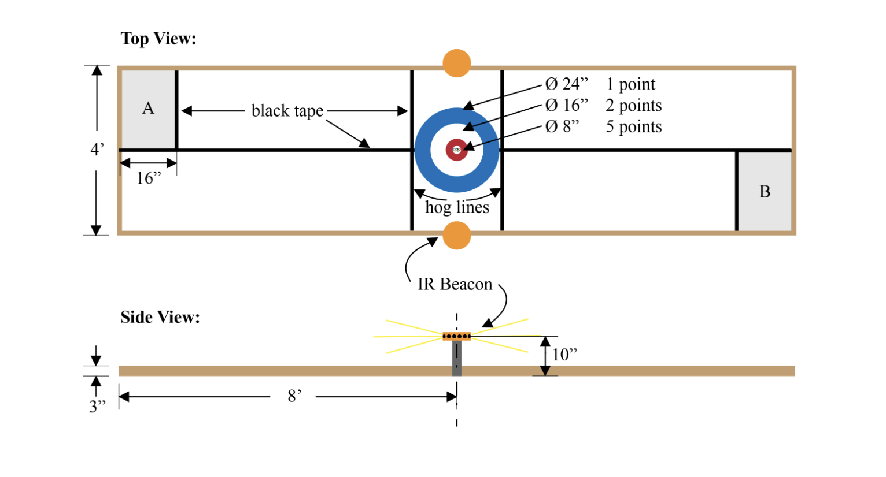

The Arena
The challenge
For the 2026 ME210 competition, The Joy of Curling, teams were challenged to design and build an autonomous robot capable of competing in a head-to-head robotic curling match. Inspired by the Olympic sport of curling, our robot had to autonomously navigate a 4 ft × 16 ft playing field, collect and shoot pucks toward a target known as the house, and compete against an opponent doing the same.
Starting from a randomly oriented position within a designated starting zone, the robot begins with up to three pucks and must autonomously deliver them toward the target. After launching its shots, the robot must return to the starting zone to reload before continuing play. Over the course of a two-minute match, each robot can play up to eight pucks while attempting to place them as close to the center of the target, the button, as possible.
Because both robots compete simultaneously, shots may collide, block opponents, or knock other pucks into or out of scoring zones. Success requires precise navigation, reliable sensing, and accurate puck launching, all within strict constraints on size, power, and cost.
